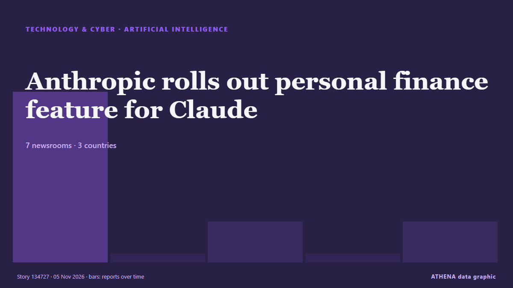

Künstliche Intelligenz
GesponsertPräsentiert von  Cybernetics and Artificial Intelligence Lab Welcome to the Cybernetics and Artificial Intelligence Laboratory, established at the Department of Business Administration of the National and Kapodistrian University of Athens. The lab is headed by Professor Dimitrios Thomakos. The lab aims to do research that can be published in top venues. Our research uses tools and methods of Artificial Intelligence, and lies in the following areas: - Forecasting - Decision making - Cyber security - Finance We are always looking forward to collaborating with exceptional students!
Cybernetics and Artificial Intelligence Lab Welcome to the Cybernetics and Artificial Intelligence Laboratory, established at the Department of Business Administration of the National and Kapodistrian University of Athens. The lab is headed by Professor Dimitrios Thomakos. The lab aims to do research that can be published in top venues. Our research uses tools and methods of Artificial Intelligence, and lies in the following areas: - Forecasting - Decision making - Cyber security - Finance We are always looking forward to collaborating with exceptional students!
| 24. Okt. | 0 |
|---|---|
| 25. Okt. | 0 |
| 26. Okt. | 0 |
| 27. Okt. | 0 |
| 28. Okt. | 0 |
| 29. Okt. | 0 |
| 30. Okt. | 1 |
| 31. Okt. | 0 |
| 1. Nov. | 0 |
| 2. Nov. | 3 |
| 3. Nov. | 7 |
| 4. Nov. | 4 |
| 5. Nov. | 9 |
| 6. Nov. | 0 |
Schlagzeilen werden auf Englisch angezeigt, wie veröffentlicht.

Anthropic rolls out personal finance feature for Claude
With Personal Finance in Claude, users can connect their bank and card accounts through Plaid and ask questions about their finances. von TechCrunch
Airbnb is working on an AI travel agent
Airbnb plans to roll out an AI agent in the first half of 2027 that will help users plan and book travel, the company said in its Q3 2026 earnings shareholder letter released today. von The Verge
US voters back data center restrictions amid backlash over artificial intelligence expansion
Local bans, development limits gain support as new Democratic governors in Texas, Georgia pledge tougher oversight. von Anadolu Agency (English)
Tencent launches Hy4 model to boost visual reasoning, AI safety
Tencent has launched its next-generation artificial intelligence (AI) model, Hy4, adding visual understanding for the first time and limiting cybersecurity training data to reduce the risk of misuse… von DigiTimes Asia
AI sharpens cat-and-mouse hacking battle as companies strengthen defences
From hacked supermarket fridges and a record cryptocurrency theft at Binance to an emergency over flaws in widely used web software, companies worldwide are facing a wave of cyber threats executives… von Tuoi Tre News
Was Elon Musk the US midterms' biggest loser? – Stateside with Kai and Carter
The tech industry spent big on the midterms, but it turned out to be a poor investment. von Guardian Business
Bengaluru startup Aina unveils AI ring to predict users' next actions
Founded by former Ultrahuman executive Apoorv Shankar, Aina has unveiled an AI-powered ring that anticipates user needs and controls apps and devices, with pre-orders from $399. von Business Standard
Marvell to buy Lumentum in $115 billion all-stock deal
Marvell has agreed to acquire Lumentum for $115 billion, combining its optical DSPs, SerDes, silicon photonics, and networking silicon with Lumentum’s lasers, transceivers, optical switches, and InP… von Tom's Hardware
Pangram’s new models spot AI fakes in images and video, it says
Pangram launched Pangram Image 1.0 for AI images and the faster Image Flash 1.0 for video. von The Next Web
Dubai’s DIFC now hosts 600 wealth and asset managers
Dubai: The Dubai International Financial Centre (DIFC) now hosts more than 600 wealth and asset management firms. von Gulf News
‘Godfather of AI’ Warns of ‘Chernobyl-Like’ AI Crisis Soon
Geoffrey Hinton, a Nobel Prize-winning computer scientist widely regarded as one of the pioneers of artificial intelligence, has warned that AI could trigger a Chernobyl-like crisis in the near… von Khaama Press
Netflix’s new AI Discover tab helps you find something to watch based on your mood
The first experimental feature under the tab will allow users to get recommendations based on what they're currently in the mood for. von TechCrunch
CrowdStrike to Acquire 2 Firms to Secure Enterprise AI Agents
CrowdStrike plans to make two acquisitions that will add artificial intelligence (AI) observability and automated AI security testing to the CrowdStrike Falcon platform, the company said Tuesday (Nov. von PYMNTS
Google AI chatbot may break press copyright rules: EU legal adviser
Google’s AI chatbot Gemini may infringe press copyright rules by reusing published content to generate answers, as highlighted by an EU legal adviser in a landmark case involving Hungarian publisher… von IOL
OpenAI hires former US Army Secretary Dan Driscoll for national security
OpenAI has hired Dan Driscoll, the 26th Secretary of the US Army, the company said on Monday. von The Next Web
(LEAD) Lee orders review for establishment of cybersecurity task force
SEOUL, Nov. 3 (Yonhap) -- President Lee Jae Myung on Tuesday instructed official... von Yonhap (English)
Alibaba partners with Apple to integrate Qwen AI model into Apple Intelligence for Chinese market
Feature to launch with official iOS 27.3 release in December. von Anadolu Agency (English)
Anthropic Reports $17 Billion Quarterly Revenue Ahead of IPO
Anthropic’s revenue reached $17 billion for the three months ended Sept. von PYMNTS
OpenAI launches 'Grid Protectors Program' to reduce data center electricity demand when the US grid is under strain
As company looks to avoid the anti-data center local pushback. von Data Center Dynamics